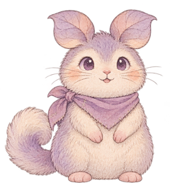

Garden of Afterlight
About the project
A story and crafting game built with Godot.
Explore, investigate, defend and create in six chapters.

01 / The creator
Creator profile
I have a background in Fashion Design and Engineering and currently study Arts and Machine Creativity at HKUST. My experience includes AI product evaluation at Video Rebirth, AI video effects at Meitu, and brand content at Li-Ning.
For this project, I direct the world, gameplay, visual design and integration, with AI assistance for assets and code.
02 / Workflow
Production process
Select a stage to see the decisions, tools and output.
Playtest feedback informs the next revision of the story, assets and interactions.

Versions
The story demo and 3D exploration prototype share one world. The 3D version currently offers first-person exploration; dedicated 3D gameplay is not yet implemented.
Project notes & credits